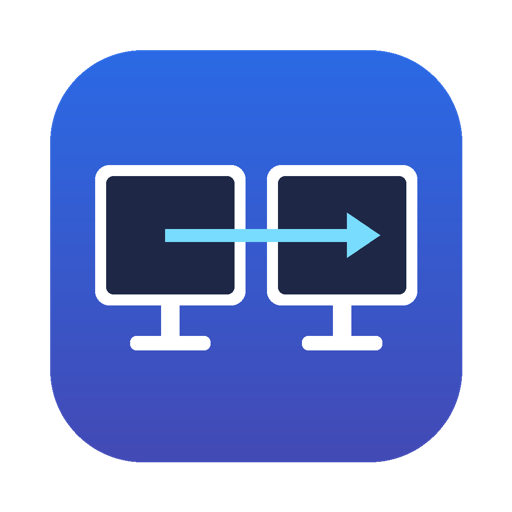

Press kit
Seamdesk lets a Mac and a Windows PC on the same network share one keyboard, mouse and clipboard.
- Platforms: macOS 14 or later (Mac App Store) · Windows 10/11 (free companion app)
- Price: 14-day free trial, then Lifetime ₩59,000 / US$39.99, Yearly ₩29,000 / US$17.99, or Monthly ₩3,900 / US$1.99. Other regions see local App Store prices. The Windows app is free.
- Mac App Store: apps.apple.com/app/id6839476326
- Windows download: GitHub releases
- Website: https://junebeomseo-beep.github.io/seamdesk/
About
Short (one line): One keyboard and mouse for your Mac and Windows PC.
Paragraph: Universal Control only works between Apple devices. Seamdesk brings the same idea to a Mac and a Windows PC on one desk: push the pointer past the edge of the screen, or press a hotkey, and keep typing on the other computer. Text and images move through a shared clipboard, the input source (including Korean) switches correctly on both sides, and ⌘ and Ctrl are mapped automatically. The two computers pair once with a 6-digit code and then talk directly over the local network with an encrypted connection — no accounts, servers or analytics.
Features:
- Edge or hotkey switching between a Mac and a Windows PC
- Clipboard sharing for text and images
- Layout editor that draws both computers' screens to scale
- Input source switching on both sides; ⌘/Ctrl mapping
- Keep-awake and external display brightness from the menu bar
- Local network only, encrypted, no account
Images
Free to use in coverage of Seamdesk. Click for full size.



한국어 소개
한 줄: 맥과 윈도우 PC를 키보드·마우스 하나로.
Universal Control은 애플 기기끼리만 됩니다. Seamdesk는 한 책상의 맥과 윈도우 PC 사이에서 같은 일을 합니다. 커서를 화면 끝으로 넘기거나 단축키를 누르면 옆 컴퓨터에서 그대로 이어서 입력합니다. 텍스트와 이미지를 클립보드로 주고받고, 한/영 전환이 두 컴퓨터 모두에서 되며, ⌘와 Ctrl을 자동으로 맞춥니다. 6자리 코드로 한 번 짝지으면 두 컴퓨터가 같은 네트워크 안에서 암호화 연결로 직접 통신합니다. 계정·서버·분석 도구가 없습니다.
가격: 14일 무료 체험 후 평생 ₩59,000, 연 ₩29,000, 월 ₩3,900 (Mac App Store). 윈도우 앱은 무료입니다.
Contact
For review copies (App Store promo codes) or questions, open an issue on GitHub.